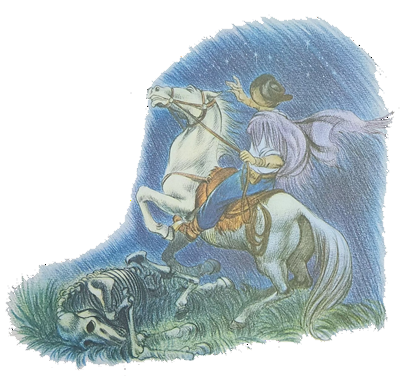
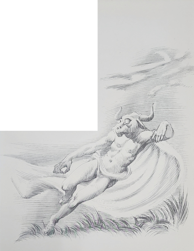
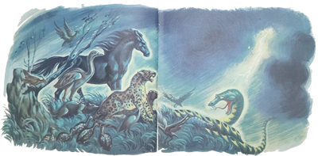
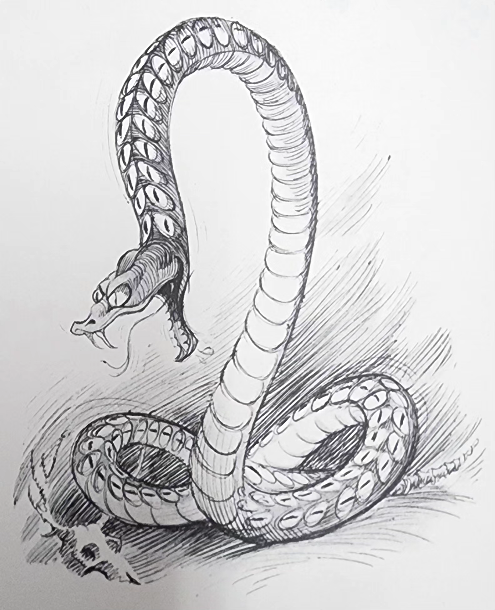
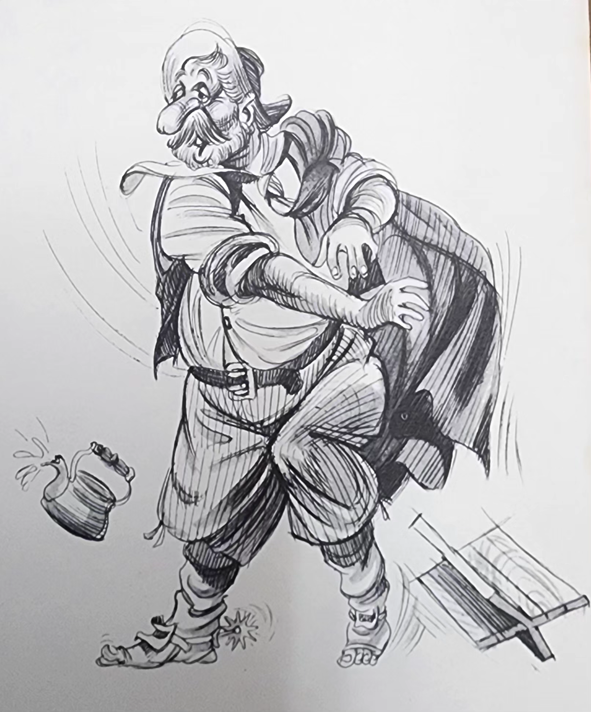
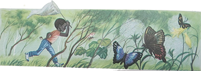
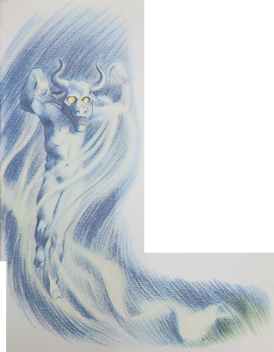
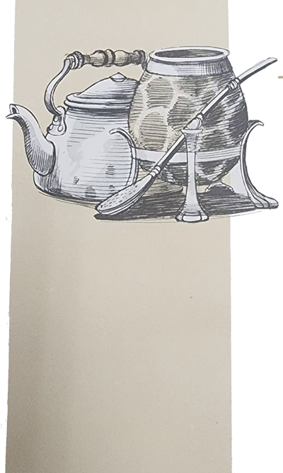

Fazia uma noite gostosa. O Arrelia, junto com vários gaúchos, sentara-se perto da fogueira em que estava sendo preparado o chimarrão. Onde andavam as crianças? Não se via uma por ali. Pouco minutos antes, haviam pedido ao Arrelia para brincar nas proximidades. Sabendo que não tinha nenhum perigo, ele concordara. Não estavam longe. Dali dava para ouvir uma ou outra risada. A cuia de chimarrão começou a passar de um em um pelos homens que estavam em volta da fogueira e finalmente chegou ao Arrelia. Mal começou a chupar a bomba com todo o prazer, as crianças apareceram aos gritos. Tão grande era o pavor que as regras de cavalheirismo haviam sido esquecidas: os meninos chegaram na frente, um tropeçando no outro, e as meninas chegaram uns bons passos atrás. Agarraram-se ao Arrelia, fazendo-o engasgar-se com o chimarrão.
- Mas o que foi? O que está acontecendo? – perguntou ele assim que pode falar.
Todos os gaúchos que estavam ali tinham-se levantado, preocupados com o que acontecera. Iberê foi quem conseguiu explicar o mistério, não sem alguma dificuldade. Contou ele que estavam passando perto de um brejo quando surgiu um monstro parecido com uma cobra de fogo. Puseram-se a correr e o monstro saíra correndo atrás dele. O Arrelia disse que era excesso de imaginação. Mas o temor das crianças confirmava que alguma coisa tinha acontecido. Um dos gaúchos bateu no ombro do Arrelia e disse-lhe que as crianças realmente haviam sido perseguidas por um monstro: o Boitatá. O Arrelia lembrou-se da superstição mas deixou o homem contar a estória:
- Quase sempre ele aparece sob a forma de uma cobra muito grande, com dois olhos enormes que parecem faróis. Às vezes também surge com a aparência de um boi gigantesco, brilhante. Ele é o gênio que protege as campinas e sempre castiga os que põem fogo no mato, a menos que estes saibam livrar-se dele, é claro.
O gaúcho olhou para as crianças e perguntou-lhes:
- Vocês não tentaram queimar o mato, não?
Responderam que não. Por que razão haveriam de por fogo no mato? O gaúcho começou a coçar o queixo, pensando. Depois de alguns minutos, Marisa exclamou:
- Foi o Carlinhos! Ele acendeu uma fogueira! Agora me lembro!

Os outros também se lembraram. Carlinhos arregalou os olhos:
- Mas foi só uma fogueirinha! Nem pensei em queimar os campos!
O homem tomou um ar de grande sabedoria:
- Então eu estava certo! Você não tinha intenção de queimar o mato, mas o Boitatá pensou que sim! Eu sabia! Ele costuma perseguir muita gente. Quando, porém, insiste em pegar a pessoa, pode contar que ela tentou incendiar as campinas ou então o Boitatá pensou assim. Até que vocês tiveram sorte. Ele não desiste facilmente, não.
A esta altura, Carlinhos batia os dentes como castanholas.
- Já passou – disse o Arrelia. Calma! Depois vocês vão ver que não há motivo para susto.
Os homens tomaram novamente seus lugares junto à fogueira e as crianças também procuraram acomodar-se. O Arrelia pediu que lhe dessem o chimarrão outra vez, assim que estivesse quente, pois havia sido interrompido pela desastrosa chegada das crianças. Passaram-lhe a cuia e o gaúcho continuou:
- Esse Boitatá não é brincadeira. Quanta gente não tem passado o seu pedaço com ele! Vocês tiveram sorte. Quem encontra o monstro pode enlouquecer, ficar cego e até morrer. Quando a gente dá com ele, a melhor coisa a fazer é fechar os olhos e ficar bem quieto, com a respiração presa, e esperar que vá embora. Pode-se também jogar nele alguma coisa que seja de ferro. O perigo está em fugir. Ele pensa que a gente fez algum mal à campina e . . . Quem está a cavalo pode, se tem coragem, atirar o laço no monstro e tocar a galope. Ele acompanha o ferro da argola que tem no laço e acaba encontrando algum arbusto, quando então se desmancha todo. Até que se componha, a pessoa tem tempo de fugir.

- Do que escapamos, não? – disse Jaci que foi a primeira do grupo a recuperar-se do susto.
Carlinhos, que de vez em quando ainda se estremecia com a lembrança do que passara, perguntou ao gaúcho que estava contando sobre o Boitatá:
- Por que não dão um jeito nesse bicho? De onde veio ele?
Todos os homens riram da expressão de raiva do menino e um deles comentou:
- Olhem como está bravo! Se continuar assim, o Boitatá vai passar apertado com ele.
O gaúcho que estava falando sobre o Boitatá tomou novamente a conversa:
- Era bom que a gente pudesse acabar com ele. Era e não era. A gente não levava mais susto, mas em compensação quem ia proteger as campinas? De qualquer jeito, ele não pode ser exterminado porque já morreu, entendem? Pode-se dizer que ele é a sua própria assombração.
- Assombração? Perguntaram ao mesmo tempo todas as crianças, atirando-se ao Arrelia.
Por incrível que pareça, ele estava novamente tomando chimarrão e novamente se engasgou.

- Mas será possível? – exclamou ele. Essa “criançauda” não me deixa tomar o chá sossegado! Não tem perigo, não!
- Mas como eu estava dizendo – continuou o gaúcho, sem se impressionar com o susto das crianças – ele é uma assombração. Aconteceu há muitos e muitos anos. Foi assim: Fazia bastante tempo que havia anoitecido e não queria clarear mais. O povo já andava preocupado. O que teria acontecido? Mas a noite continuou por muito tempo e foi tão longa que muitos acreditaram que o dia não ia voltar mais. E como a noite estava durando muito, tudo ficou desorganizado. Não havia mais carne. As colheitas não podiam ser feitas no escuro e ficavam perdidas. Todos estavam cansados da escuridão, daquela noite estranha, onde não brilhava a Lua nem uma estrela, onde não se ouvia um rumor nem se sentia o cheiro dos pastos e o perfume das flores.
Tão grande era a escuridão que as pessoas tinham medo de afastar-se e não encontrar mais o caminho. Ficavam reunidas em volta de pequenas fogueiras, mas as brasas cobertas de cinza mal esquentavam porque ninguém tinha coragem de soprar, tão desanimados estavam todos. Nem os maiores conhecedores dco lugar se arriscavam a sair dali. Que noite terrível!
Não muito longe, numa gruta escura, vivia a Boiguaçu, a Cobra Grande, quase sempre a dormir. De tanto viver no escuro, seus olhos tinham crescido muito e ficado que nem dois faróis. Acontece que no início da longa noite caiu uma chuva tão forte e seguida que todos os lugares baixos foram inundados. Os bichos atingidos correram aos bandos para os lugares mais altos, e só se ouviam berros, pios e gritos. Um horror. O que salvou as pessoas foram as fogueiras que então haviam sido acesas. Não fosse isto e não teriam vivido diante daquela multidão de bichos apavorados.
A água também invadiu a gruta onde morava a Boiguaçu. Ela custou muito para acordar e quase que acabou morrendo afogada. Por fim, despertou, percebeu o perigo, deixou o esconderijo e seguiu para onde já estavam os outros bichos. Diante do perigo, todos acabaram ficando amigos: perdizes, onças, cavalos . . . menos o Boiguaçu. O seu mau gênio não lhe permitiu conviver com os outros. Ficou de lado, o mais longe possível.
- Por que os outros bichos não se reuniram e não lhe deram uma surra? – interrogou Marisa, horrorizada com os maus modos da cobra.
- Eles estavam apavorados com tanta água e nem pensaram nisso – esclareceu o gaúcho. Depois, a fama da Boiguaçu não era brinquedo, não.
Carlinhos entrou na conversa:

- De tanto ouvir falar em água, fiquei com sede.
- Atenção! – gritou o Arrelia. Queira interromper a estória que o Carlinhos vai tomar água!
Foi o suficiente para que todas as outras crianças sentissem sede e houve uma corrida só à casa da estância.
- Bem – disse o Arrelia – vou aproveitar para tomar um pouco de chimarrão.
Logo lhe passaram a cuia e ele se pôs a chupar a bebida o mais depressa que era possível. Um dos gaúchos começou a atiçar a fogueira enquanto um outro foi pôr mais água na chaleira.
Depois de alguns momentos, as crianças apontaram e o Arrelia tratou de devolver a cuia rapidamente ao gaúcho que estava mais perto.
- Pegue logo! – pediu ele. Aí vem elas e vou engasgar-me outra vez!
O gaúcho que fora buscar água também voltou e todos se arrumaram novamente. O que estava contando a estória prosseguiu:
- A chuva cessou mas com a escuridão que fazia os bichos não conseguiram encontrar o caminho de volta. O tempo foi passando e a fome apertando. Começaram as brigas entre eles. Brigavam às escuras! Não enxergavam nada! Somente a Boiguaçu via tudo com seus olhos de fogo.


Acontece que os outros animais sentiam fome, a Boiguaçu também andava com o estômago no fundo. Só nãohavia atacado por causa da grande quantidade de animais. Dava medo. Se a cobra podia ficar muito tempo sem comer, os outros bichos já não podiam mais. Mal aguentavam o próprio peso. A cobra percebeu isso e viu que era chegada a hora. Preparou-se então para o ataque. O que comeria em primeiro lugar? Um cavalo? Uma onça? Uma perdiz? Eram tantos que nem sabia.
Vocês sabem que todos os bichos têm preferência por determinada coisa. A Boiguaçu gostava especialmente de comer olhos. Como era grande a quantidade de animais que ela podia atacar, naturalmente ia ficar satisfeita comendo apenas os olhos.
- Que gosto esquisito, não? – comentou Iberê.
- É, de fato – respondeu o gaúcho. Mas gosto não se discute.
O homem ia prosseguir a narração quando alguém acendeu um isqueiro atrás das crianças, para acender um cigarro. Mas o clarão foi o suficiente para dar-lhes um susto daqueles.
- É o Boitatá! – gritou Carlinhos, agarrando-se ao Arrelia, que estava de cócoras, fazendo-o cair sentado. Em seguida vieram as outras crianças e o Arrelia desapareceu. Os gaúchos, ouvindo o nome terrível, levantaram-se e começaram a olhar em volta.
Custou para o Arrelia escapar do assalto das crianças. Saiu com o chapéu amassado, a bengala enfiada no pescoço, meio sufocado:
- Arre! O que está acontecendo hoje? Vocês vão acabar ainda me matando! Ai minhas costas! Estou todo “quebraudo”!
Quando as crianças contaram por que haviam pensado que era o Boitatá, os gaúchos acabaram concluindo que fora o isqueiro a causa do tumulto. Caíram todos na risada. Até o Arrelia, que havia sido a maior vítima, se pôs a rir com vontade.

- Mas quem foi que acendeu o isqueiro? – perguntou ele.
- Fui eu – disse um dos homens.
E por que não esclareceu logo? Quase que o pessoal morre de “meudo”!
- Mas eu não sabia qual era o motivo! – respondeu o dono do isqueiro. Também fiquei assustado! E o pior é que perdi o danado. Não sei o que fiz dele! – e depois de vasculhar todos os bolsos, começou a procurar por todos os cantos do lugar.
Tudo voltou ao normal, com exceção do dono do isqueiro, que continuou em sua busca, e o gaúcho contador da estória, prosseguiu:
- Pois é, minha gente. A Boiguaçu não aguentou mais de fome e resolveu atacar o animal que se encontrava mais perto. Era justamente uma enorme onça pintada. Fosse e, outra ocasião e a onça não teria sido presa tão fácil, não. Mas enfraquecida pela fome e cega pela escuridão, ela nem reagiu. A Boiguaçu matou a onça e comeu os olhos dela. Logo depois atacou a um cavalo, e a um boi e a outros animais. Mas só comia os olhos. Gostou tanto que não fazia outra coisa. Ou melhor: também dormia. Quando estava satisfeita, recolhia-se a um canto e dormia, dormia a gosto. Depois, quando a fome voltava, ela tornava ao seu trabalho de matar os outros animais.
Como vocês sabem, um bicho sofre a influência do alimento que come e a Boiguaçu não escapou à regra. E como sua pele era muito fina, algum tempo depois a cobra começou a ficar luminosa com a luz dos inúmeros olhos engolidos. Os que viram a cobra não reconheceram mais a Boiguaçu e pensaram que fosse uma nova cobra. Deram-lhe então o nome de Boitatá, ou seja cobra de fogo, nome muito apropriado, pois realmente ela era uma grande lista de fogo, mas um fogo triste, frio, azulado.
A partir de então as pessoas não tiveram mais sossego. Viviam com medo de serem atacadas pelo monstro. Do jeito que ele andava matando os bichos, de fato logo ia ter necessidade de atacar as pessoas.

Mas tiveram sorte. A preferência do Boitatá foi sua própria perdição. Não comia outra coisa que não fossem olhos e cada vez ficava mais luminoso. E também mais fraco porque os olhos não sustentavam muito embora satisfizessem bastante. O Boitatá foi ficando cada vez ma8is fraco, mais fraco até qie não pode sair mais do lugar. Acabou morrendo de fraqueza.
- Se ele morreu, como é que hoje nos fez correr? – perguntou Carlinhos, fazendo esforço para compreender. Foi mesmo sua assombração?
- Ele morreu e não morreu, entende? – disse o gaúcho. O monstro morreu, mas a sua luz esparramou-se pelos brejos e cemitérios e hoje pode tomar a forma de cobra e de touro. Parece que por castigo o Boitatá ficou obrigado a zelar pelas campinas.
O engraçado é que logo que ele morreu, o dia surgiu outra vez. Foi uma alegria enorme. As pessoas voltaram a sorrir e as aves a cantar, tudo enfim voltou a ser como era.
Hoje é suficiente tomar cuidado com o Boitatá, mas eu uma vez passei um aperto que vocês nem fazem ideia. Já vai longe. Eu andava a cavalo por aí quando percebi que o Boitatá estava perto. Isso de ficar parado de olhos fechados não é comigo. Não tenho paciência, não. Assim, não perdi tempo. Apanhei o laço, ou melhor: tentei apanhar, pois o bandido não estava ali. Parece que o Boitatá percebeu o que acontecia e disparou atrás de mim. Ficou com raiva por certo. Sabem o que fiz para livrar-me dele? Pulei do cavalo e mandei que o animal corresse para um lado. Eu corri para o outro. Foi minha salvação. O Boitatá ficou atrapalhado e não sabia se pegava o cavalo ou a mim. Nós dois conseguimos escapar. Agora, antes de sair, à noite, sempre verifico o laço. Não quero cair noutra, não.
Mal o gaúcho terminou de contar a estória, o dono do isqueiro voltou, alegre, mostrando o objeto que havia perdido:
- Olhem! Achei o isqueiro! Sabem onde ele estava? Na minha própria mão! Só agora percebi. Acho que foi o susto!
Todos riram e se levantaram. Cada um tomou o seu rumo e o Arrelia foi para a casa da estância, desta vez seguido pelas crianças mais de perto do que nunca.

Sentaram-se todos na grande varanda esperando a hora de dormir. Carlinhos disse ao Arrelia em voz muito baixa:
- Eu não saio mais à noite! De jeito nenhum!
- Ué, por quê? – perguntou o Arrelia, mais para brincar pois sabia perfeitamente qual era o motivo.
Carlinhos arregalou os olhos:
- Com o Boitatá por aí? Nunca mais! Nem sonhando!
As outras crianças concordaram com Carlinhos. O Arrelia tomou um ar sábio e disse:
- Vocês não precisam ter medo do Boitatá. É apenas uma lenda.
- O quê? – surpreendeu-se Jaci. É apenas lenda? E aquilo que nos perseguiu? Era uma lenda?
O Arrelia deu risada e esclareceu:
- É um fenômeno comum que ocorre na Natureza. Não é difícil ver-se uma “luminosidaude” – o fogo-fátuo – nos cemitérios e nos pântanos. Trata-se de emanações causadas pela inflamação da fosforita, combinada com o hidrogênio proveniente da decomposição de substâncias orgânicas. Foi este fenômeno que deu origem à lenda do Boitatá.